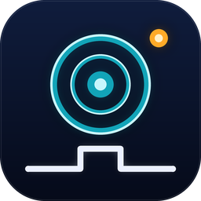

SyncCam
Behaviour video synced to Neuropixels
Records video from a USB camera while an Arduino samples the TTL sync signal that also goes to the Neuropixels, plus a microphone, and switches an IR LED. Every TTL pulse is saved with the video frame at that moment and the sound at the same sample, so video, sound and the Neuropixels recording line up.
- Behaviour video
- Arduino TTL + microphone
- Frame for every TTL pulse
Download
Screenshots
Documentation
The full instructions are in the README on GitHub, together with the source code, the manual (where there is one) and all earlier versions.